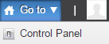
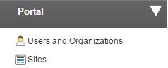
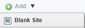
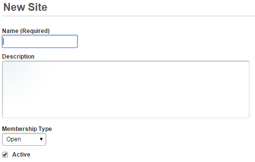

Sites are the basic unit for creating content in the content management system. Each site has a discrete set of assets (pages, documents, etc.) that are managed by a set of site roles that can be granted to users for that site. When using sites, it's important to understand the basic concepts:
An Organization is the portal construct for giving a hierarchical structure to sites affiliated with companies
A site is the basic unit for content management and collaboration.
Each site has an independent set of content:
Each Site has an independent set of users that can be granted granular access to Site content.
A generic site construct including pages, content and permissions from which new Sites can be created
A single piece of HTML content that can be displayed on one or more pages that can be created using a Web Content Template or the WYSIWYG editor.
A portal construct that is used to store form-based data to build Web Content Articles using Templates.
A portal construct that is used to automatically display a Web Content article.
A portlet that displays content dynamically based on site repository, asset type, categorization etc. with multiple display styles.
Click the Go to menu and select Control Panel. 
On the left side, under Portal section, click Sites. 
Click the Add menu and select Blank Site. 
Enter the site name, and the description. Select Open, and check Active. Then, click Save to save the site. 
You have successfully created a new site